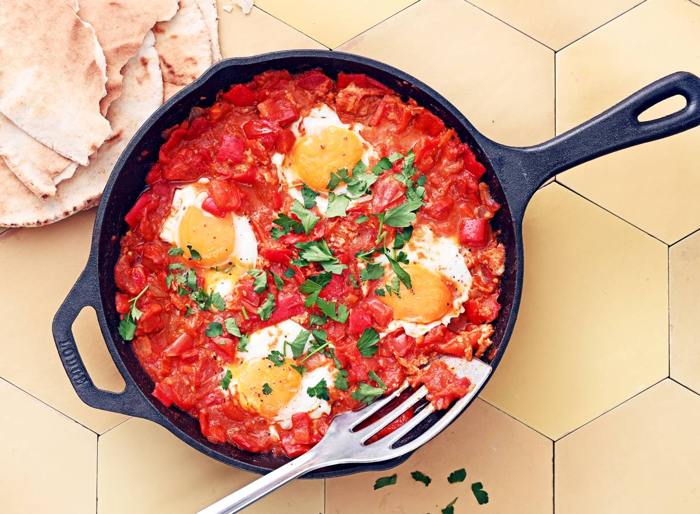

Shakshuka met platbrood

Shakshuka wordt in heel Noord-Afrika en het Midden-Oosten gegeten, met elke streek een eigen variatie. De basis is tomaat -vers in het seizoen of anders uit blik- en ei. Shakshuka kan mild zijn, of pittig. Het wordt traditioneel gegeten als ontbijt.
Ingredienten (4 personen)
- 1 middelgrote ui
- 4 tenen knoflook
- 5 trostomaten
- 760 gram Tasty Tom trostomaten
- 2 puntpaprika's
- 15 gram platte peterselie
- 2 eetlepel olijfolie mild
- 1 eetlepel gemalen komijn
- 0.5 eetlepel gerookte-paprikapoeder zoet
- 0.5 theelepel chilivlokken
- 0.5 theelepel zout
- 4 witte scharreleieren
- 4 Libanees platbroden volkoren
Aan de slag
- Snipper de ui. Snijd de tenen knoflook fijn en snijd alle tomaten in kleine blokjes van 2 cm. Verwijder de steelaanzet van de paprika’s, snijd in de lengte doormidden en verwijder de zaadlijsten. Snijd het vruchtvlees in blokjes van ca. 2 cm. Snijd de peterselie grof.
- Verwarm de olie in een pan op middelhoog vuur. Fruit de ui en knoflook 3 min. onder regelmatig omscheppen. Voeg de paprika’s en tomaten toe en bak 5 min. op middelhoog vuur mee. Voeg de gemalen komijn, paprikapoeder en chili vlokken toe en breng op smaak met peper en het zout. Breng aan de kook en laat 10 min. zacht koken. Verwarm de oven voor op 200 °C.
- Maak een kuiltje in het tomatenmengsel met de achterkant van een lepel en breek er voorzichtig een ei boven. Herhaal dit met de rest van de eieren. Bestrooi elk ei licht met peper. Leg een deksel op de pan en laat het mengsel 5-8 min. koken op hoog vuur, tot het eiwit net is gestold.
- Verwarm de platbroden volgens de aanwijzingen op de verpakking. Serveer de shakshuka met de peterselie en het brood.Lekker met hummus.
Home